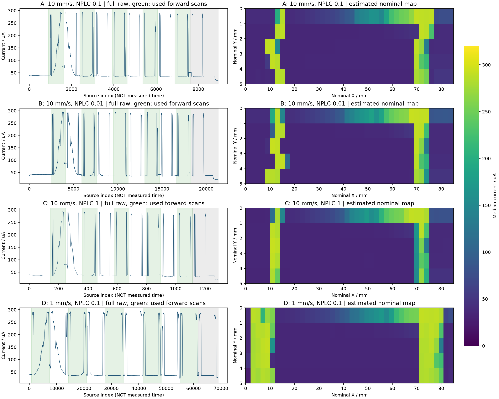
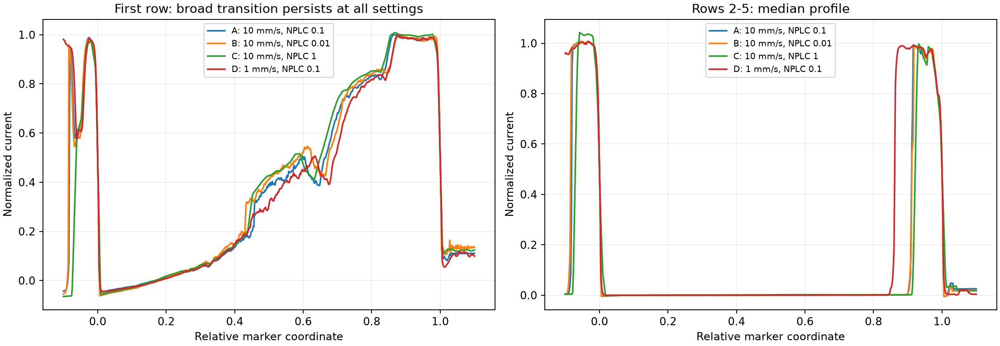
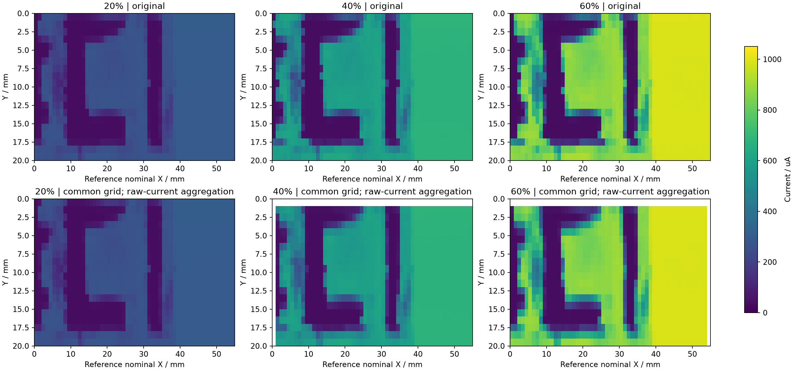
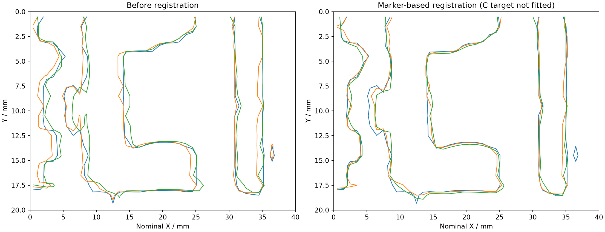

七组均保留完整原始波形。无真实时间戳，坐标为模型估计；未计算真实斯托克斯参数。
NPLC=1组欠采样明显；0.01比0.1有更多点，但首行宽缓变化在四组均存在，不能归为单纯积分拖尾。


Marker拟合不使用中间C。独立竖边差减小到约0.15名义mm，但整块C强度差没有降低，不代表绝对精度或完整偏振标定。


打开共同像素数据查看器 · 三通道数值 · 原始点区间和权重
交互图离线可用；请保持解压后的目录结构。